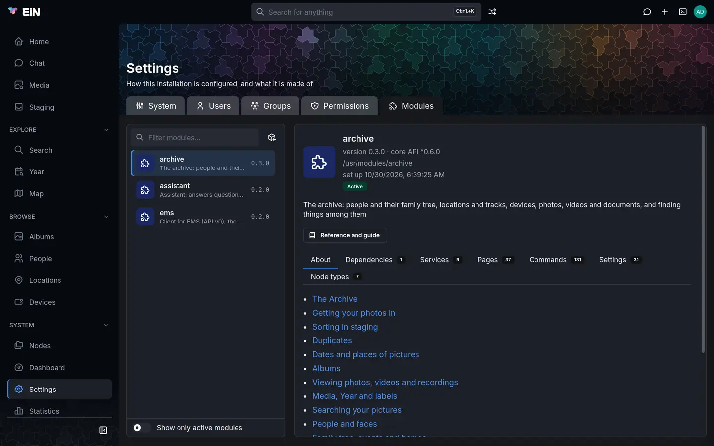

This page is for the administrator who has just installed EiN and is setting it up for a family. It goes from the first sign-in to the family using it, one short step at a time, and links each step to the page that covers it in full. The steps hold for any EiN, whichever modules it has; each module's own pages take over from there.
Take the steps in order. Some of them depend on an earlier one: the sharing defaults in step 4, for example, apply to what is created after you set them, so set them before the family starts adding things.
- Sign in and change the admin password
- Check the dashboard
- Install the modules you want
- Decide who sees what
- Create accounts for the family
- Try the terminal
- Start with the modules
- Let the family sign in
- Keep EiN running
Commands on this page are written for podman. With Docker, write docker compose where the page
says podman compose.
Sign in and change the admin password
At its end the install printed the address and the administrator's password:
EiN is up at http://ein.local:8080/
Sign in as admin with the password 5e0c9a2f71b3d846 and change it, then delete the line INITIAL_ADMIN_PASSWORD from /home/anna/ein/.env.- Open the address in a browser. If your computer cannot find that name, use the machine's IP
address instead, such as
http://192.168.1.20:8080/. - Enter
adminunder Username or e-mail, the printed password under Password, and choose Sign in. EiN opens on Home, titled Welcome. - Open the account menu under your picture at the top right, choose Profile, then the Security tab.
- Fill in Current password, New password and Confirm new password, and choose Update password. EiN answers Password updated.
Install EiN shows the form.
You can change it in EiN's terminal instead. Open the terminal with the top bar's terminal button or Alt+T, and run:
# in EiN's terminal
user passwd adminIt asks for the new password after Password:. The reference
lists its options.
If the install's output is gone, the password is still in ~/ein/.env, as
INITIAL_ADMIN_PASSWORD, and every later run of ./setup.sh prints it again at its end:
# on the machine EiN runs on, in ~/ein
grep INITIAL_ADMIN_PASSWORD .envOnce you have changed the password, delete that line from .env: the old password stays readable
there for anyone who can read the file, and changing the line does not change the password, which
EiN takes from it only at its first start.
Check the dashboard
Choose Dashboard under System in the sidebar. Only administrators have it. The page, System dashboard, shows a badge above its title for how things stand:
| Badge | What it means | What to do |
|---|---|---|
| Healthy | Nothing is waiting to be done. | Nothing. |
| Catching up | Work is waiting, and some was done in the last hour, as after an import. | Wait. It turns to Healthy when the work is done. |
| Stuck | Work is waiting, and none was done in the last hour. | Look at the Work tab, and read Health and the dashboard. |
| Needs a person | A check failed. | Read the failed check on the Overview tab, and see Troubleshooting. |

For the first minute after EiN starts, the dashboard may show warming up while it takes its first readings.
Below the badges, the Overview tab lists every check that is not fine. Warnings do not stop Healthy, and two are expected on an install without the optional parts:
- with the archive but without the media service,
emssayshttp://ems:8181 is not answering; work that needs it waits; - with the assistant but without a language model,
llmsayshttp://llm:8190 is not answering; the chat cannot answer until it does.
With the parts installed, the same warnings show for a while after a start, as the media service loads its models and the language model downloads its own the first time; they clear by themselves. Step 3 says how to add either part.
Install the modules you want
What EiN is for comes from its modules. Without any, the sidebar holds only Home, Search and the pages under System. These modules are published:
| Module | What it adds | What it needs |
|---|---|---|
archive |
Media, Staging, Year, Map, Albums, People, Locations and Devices in the sidebar, and Import media, Album, Person, Location and Device in the Create menu | the ems module, installed with it, and the media service |
assistant |
Chat, in the sidebar and as a top-bar button | a language model, your own or a hosted one |
ems |
the client for the media service, and the Media service tab on the dashboard | the media service |
If you installed with the EiN Archive command from einhq.eu, the three are installed already. Open Settings → Modules, choose each module, and check that its panel says Active, not Not set up or Setup failed.
To install a module:
- Open Settings → Modules.
- Choose the Published modules button beside the filter.
- Choose Install beside the module. EiN installs the modules it needs as well, and says so: "Installed, with ems".
- The module's pages appear in the sidebar without a reload.


In EiN's terminal, mod install does the same:
# in EiN's terminal
mod install archiveThe archive's photos, videos and recordings need the media service, a separate container that reads dates and places, makes the previews, and finds faces, text and speech. Installing the module does not install the service. If you left it out at the install, add it on the machine:
# on the machine EiN runs on
~/ein/setup.sh --emsIt downloads the media service's image, about 30 GB, and starts EiN again. Without
it, uploads arrive but wait in staging as being prepared. The assistant needs a language
model the same way: ~/ein/setup.sh --llm runs one on this machine, and a hosted provider is set
in ~/ein/.env. Modules, The media service and
The language model have the details.
Decide who sees what
Settings, under System in the sidebar, is where you set up EiN. Its tabs are System, with every system setting by category, Users, Groups, Permissions and Modules. Each setting says what it does and which module brought it, and is saved on its own with Save change. Configuration explains the page and the same settings in the terminal. Start with who sees what.
Open Settings → Permissions. Its four cards each say in a sentence what their settings come to.

Visitors. Visitors may browse is Off on a new install, and the setting itself advises
keeping it off for a family's own archive. Off, anyone who has not signed in is asked to sign in.
A share link still opens what it was made for (see Sharing). Turn it on only
for an archive meant to be public. The setting is CFG_GUEST_BROWSING.
Sharing sets what anything created as shared starts with. With the Archive installed, that is an album made with Create → Album, and a group filed from staging into a new album; the rest of this step speaks of albums for that reason. Its rows:
| Row | New install | What it decides |
|---|---|---|
| Owner | empty: whoever creates it | who owns what is created |
| Group | Users, which is everyone with an account | the group it is shared with |
| Permissions | Owner Edit, Group “users” View, Everyone else None (as 0750) |
what the owner, the group and anyone else may do with it |
So on a new install the card reads: "Shared with Users: the owner can change it, members can see it, anyone else can't see it." Some common choices:
| You want | Set |
|---|---|
| Everyone with an account sees every album, and only its owner changes it | nothing: the defaults do this |
| The family adds to and changes each other's albums | Group “users” to Edit |
| Some accounts are not family, such as friends you share a single album with | a family group as Group (see step 5), with Everyone else at None |
Each row is saved on its own with Save change. A change applies to what is created afterwards; albums that exist keep their sharing, which you change with Share, as Sharing shows. Each person can also narrow what they create, under Profile → Preferences → How widely what you create is shared.
Sign-in sessions. A browser stays signed in for 1 day after its last visit (Browser sign-in), and a session unused for 12 hours ends (Idle session). Lengthen both if the family should stay signed in longer on their own devices.
Sharing and Permissions in depth explain what each choice does.
Create accounts for the family
Give each person an account of their own. With the Archive installed, what they upload waits in their own staging area, which only they see, until they file it into an album.
- Open Settings → Users and choose the New user button beside the filter.
- Type the person's Name, such as Helen Okafor. Username is suggested from it (
helen). It is lower case and cannot be changed later. - E-mail is optional: with one, they can sign in with it instead of the username. EiN sends no e-mail to it.
- Type a Password and Repeat it. You can leave both empty and set the password later, but they cannot sign in until you do.
- Under Groups, Users is ticked and greyed: everyone who signs in belongs to it. Tick any other group the person should be in.
- Choose Create user. EiN says "Created helen." and opens the account.

If everyone with an account is family, the Users group already covers them, and you need no other group. If some accounts are not family, make a group for the family:
- Open Settings → Groups and choose the New group button beside the filter.
- Type a Name, such as
family(it cannot be changed later), a Title, such as Family, and tick the Members. - Choose Create group.
- On Settings → Permissions, choose the group as Group on the Sharing card, and add it under Groups on the New users card, so the New user form ticks it for each new account.
Group changes reach a person the next time they sign in.
When someone forgets their password, open their account in Settings → Users, type a New password and Repeat it under Password, and choose Set password. Accounts and groups covers the rest: disabling and deleting accounts, groups, and the commands.
Try the terminal
Everything the pages do, and more, can be done with commands in EiN's terminal, a shell that works on the same tree as the pages, as the person signed in. Open it with the top bar's terminal button, or with Alt+T wherever you are, and try a first command:
# in EiN's terminal
healthIt says in one line how EiN is doing, the same verdict as the dashboard's badge, and lists the
checks behind it. --help after a command's name says how to use it, and docs find followed by
what you want done finds the command that does it. Press Alt+T again to hide
the terminal; what runs in it goes on.
The terminal shows the rest, and SSH and SFTP how to reach the same shell from your own computer.
Start with the modules
What comes next depends on the modules you installed in step 3:
- The Archive. The Archive takes it from here: importing the first photos, sorting them in staging into albums, and sharing an album, with or without an account.
- The Assistant. The Assistant says what it needs, what it adds, and where to start chatting.
Let the family sign in
Give each person:
- the address you opened in step 1, such as
http://ein.local:8080/, or the machine's IP address if their device cannot find the name; - their username, or the e-mail address you gave the account, and their password.
They sign in on the sign-in page with Username or e-mail, Password and Sign in. Ask them to change their password at once, under Profile → Security. Finding your way around is a good page to send them, with the overview of each module you installed, such as The Archive.
EiN answers on your home network. Reaching it from elsewhere takes an HTTPS proxy of your own in front of it; Ports, HTTPS and remote access explains what EiN needs from one.
On a phone, EiN runs in the browser; there is no app to install from a store. The page fits the screen: the EiN mark at the top left opens the menu. From the browser's menu, a phone can add EiN to its home screen, where it opens full screen, like an app, when EiN is served over HTTPS. EiN does not work offline. EiN on a phone shows what differs.
Keep EiN running
Look at the dashboard now and then. EiN sends no alerts, by e-mail or otherwise: what goes wrong shows on the dashboard and in the logs. Its Storage card shows how much room each part of the data folder has left, and says "full in ~N days" in red when a part fills within two weeks. EiN does not stop work for you when the disk fills.
Update by running the installer again:
# on the machine EiN runs on
curl -fsSL https://einhq.eu/install.sh | bashIt updates ~/ein, then downloads the newest images of EiN and its services and starts them
again, keeping your options in ~/ein/.env, your data and the installed modules. ~/ein/setup.sh
alone does the same, ~/ein included, without checking the machine. There are no releases: an update
takes the newest code, and there is no going back to the previous one. Modules are updated
separately, with Update in Settings → Modules → Published modules.
Updating explains what an update touches.
After the machine restarts, check that EiN came back. The installer makes EiN start at boot
where it can: under podman it enables podman-restart.service, and lingering for your user, and
with Docker it checks that Docker's own service is enabled. Where it cannot, its output ends with
"EiN does not start again when the machine does until this has run:" and the commands to run,
such as sudo loginctl enable-linger and your username. Until they have run, start EiN yourself
after a reboot:
# on the machine EiN runs on, in ~/ein
podman compose ps
podman compose up -dBack up. EiN has no backup command; you copy its data yourself, with your own tools. A backup needs three things, taken together:
~/ein/.env, which holds your options and the passwords made at the install, and nothing else keeps them;- the data folder,
~/ein/dataunless you chose another at the install, and above all itsfilesfolder, which holds your originals; - the database, which is the container engine's volume
ein_db(or the folder you gave--db-dir), not part of the data folder.
Your data: backup, moving and removing gives a procedure, and Troubleshooting helps when something goes differently.